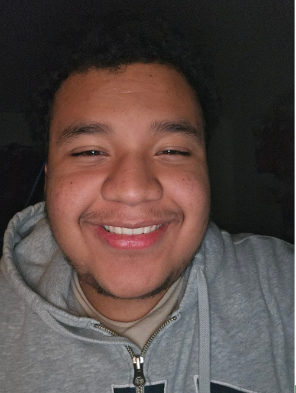
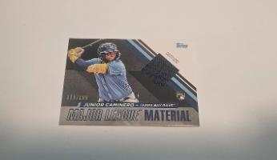

About Me
Who I Am

I am Kevin. I was born here in the United States of America. My ethnicity is Salvadoran. Some of my interests are playing soccer with friends, playing video games, and learning new things. I am a student at Ottumwa High, and I work at Kohl's. I speak both English and Spanish.
My Interests
Pokémon and Sports Cards
I like collecting Pokémon cards. I used to be very into Pokémon, but as the years went by it started to fade away. This year I got back into the Pokémon scene. I bought a few packs. I have an unopened pack of Surging Sparks. I also bought an older version of Pokémon Sword and Shield on the Nintendo Switch, which I have really been enjoying. Overall, I am just a big fan of Pokémon and their IP.
On top of collecting Pokémon cards, I also collect sports cards. I have a relic card, meaning the card has a piece of clothing used from the game in it or from the player it's numbered to. I pulled it from a pack that I bought from Hobby Lobby.

Soccer
Soccer has been a huge part of my life and an interest that is, at least for me, the top interest. My favorite player is Ronaldo, but currently playing it would be Lamine Yamal. My favorite club is FC Barcelona, the club that Lamine Yamal is in. I started playing soccer when I was very young. My earliest memory of playing soccer was maybe around 7 or 8. It was me playing with my cousin at his house and using the fences he had as goals.
Video Games
Playing video games is another of my interests. I love Pokémon games, but in general I love Nintendo games. Zelda is definitely my favorite franchise from Nintendo. The music from Zelda, for me at least, has to be some of the best pieces I have heard from the gaming scene. I love zombie survival games like Project Zomboid. I also like PvP games like Fortnite and Call of Duty: Modern Warfare.
My Goals
My goal is to be able to graduate with a 3.5 at Ottumwa High School, then go into Indian Hills for accounting. I would like to spend up to 2 or at most 4 years at Indian Hills for accounting. Then, further down the line, maybe go to another college like Iowa State and get further education in accounting.